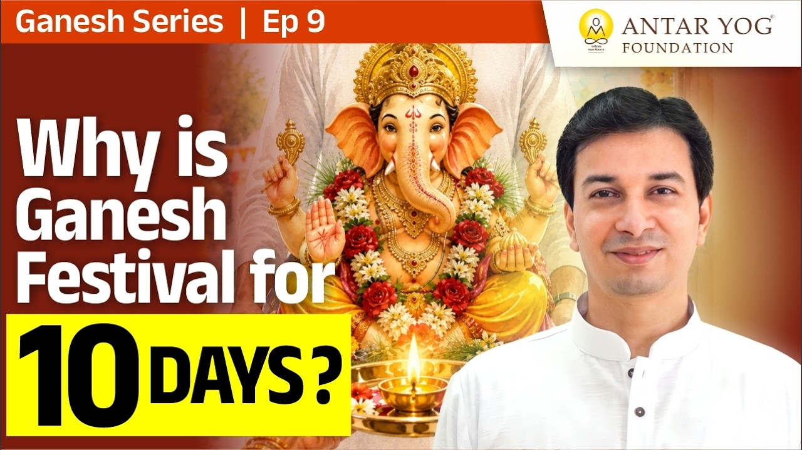

हर साल गणपति चतुर्थी को आते हैं और अनंत चतुर्दशी को विदा होते हैं। हम उत्सव मनाते हैं, मोदक बनाते हैं, विसर्जन करते हैं।
पर क्या कभी मन में यह प्रश्न उठा कि यह उत्सव चतुर्थी से ही क्यों शुरू होता है? इस प्रवचन में इसी प्रश्न का उत्तर है, और वह उत्तर पंचांग में नहीं, हमारी अपनी चेतना में छिपा है।
चतुर्थी ही क्यों, प्रतिपदा क्यों नहीं?
पहली तारीख से दसवीं तक क्यों नहीं? प्रतिपदा से दशमी तक क्यों नहीं? अष्टमी से, या पूर्णिमा पार करके तृतीया तक क्यों नहीं?
उत्तर सीधा है: चतुर्थी पंचांग की वजह से महत्वपूर्ण नहीं है। चेतना की चार अवस्थाएं हैं, चार सोपान हैं। चतुर्थी उसी चौथे सोपान की ओर संकेत है।
पहली अवस्था: जागती दुनिया
पहली है जागृत अवस्था (Waking State)। आंखें खोलकर, शरीर के द्वारा जो संसार हम अनुभव करते हैं, वही जागृत अवस्था है।
यह वह दुनिया है जिसे हम "असली" मानते हैं। पर क्या यह सचमुच इतनी असली है?
दूसरी अवस्था: सपनों की दुनिया
आंखें बंद होती हैं, तो एक और दुनिया खुल जाती है: स्वप्न अवस्था (Dream State)। शरीर कुछ नहीं कर रहा, पर मन काम कर रहा है, बुद्धि भी थोड़ी काम कर रही है।
आप कहते हैं, "मैं तो काम कर रहा था, कब आंख लगी पता नहीं, और अचानक मैं जंगल में था।" यहां ध्यान दीजिए: "मैं" दोनों जगह था। शरीर बिस्तर पर था, फिर भी "मैं" जंगल में था।
जागकर आप कहते हैं, "मेरे पीछे शेर लग गया था, मैं सपने में डर गया था।" इसका अर्थ है कि मैं यह शरीर नहीं हूं। मैं कोई और था, जो देख रहा था। मैं साक्षी (Witness) था।
आचार्य जी बताते हैं कि तुम न सपने वाले हो, न जागृत वाले। तुम दोनों के दृष्टा हो, तुम वह आत्म तत्व हो।
जिस दिन यह जान लोगे, उस दिन जीवन बदल जाएगा। और इसी बुद्धि के आने को गणपति कहते हैं।
क्या आपने कभी गौर किया है कि सपने और जागृति दोनों में "मैं" एक ही रहता है? वह कौन है?
तीसरी अवस्था: बिना प्रकाश का नगर
तीसरी है सुषुप्ति अवस्था (Deep Sleep State), यानी गहरी नींद। न मन, न बुद्धि, न शरीर का भान। पूर्ण अंधकार, एक भी विचार नहीं।
वहां न दर्द है, न सुख, न दुख। आयकर की बड़ी से बड़ी समस्या वाला हो, या जेल में बंद चोर, गहरी नींद में या बेहोशी की दवा के असर में, उतनी देर के लिए सारे कष्ट गायब हो जाते हैं।
पर एक बात है: यहां परमात्मा का बोध भी नहीं है। यह एक ऐसा नगर है जहां बिजली चली गई है। शांति है, पर प्रकाश नहीं।
तीन पुर, और एक साक्षी
इन तीनों अवस्थाओं को पुर कहा गया है, यानी तीन नगर: जागृत, स्वप्न और सुषुप्ति।
अब एक सूक्ष्म बात देखिए। गहरी नींद से उठकर आप कहते हैं, "मैं छह घंटे घोड़े बेचकर सोया, कुछ पता नहीं चला।" जिसे "कुछ पता नहीं चला", उसे यह तो याद है कि कुछ पता नहीं चला! यह स्मृति किसकी है?
यही इशारा है: ये तीनों अवस्थाएं मैं नहीं हूं, इन तीनों का मैं साक्षी हूं।
चौथी अवस्था: तुरीय
जब आप इन तीनों से ऊपर उठते हो, उस अवस्था का नाम है तुरीय (Turiya, the Fourth State)।
पर तुरीय कोई अलग कमरा नहीं जिसमें जाना है। इसे समझने के लिए गुरुदेव एक सुंदर उदाहरण देते हैं: सोना। नींद वाला सोना नहीं, स्वर्ण वाला सोना।
सोने का दृष्टांत
सोने से कान की बाली बनाइए, नाक की नथ, गले की चेन, या कंगन। हर एक का आकार अलग, हर एक का नाम अलग। हमने सबको नाम-रूप (Name and Form) दे दिए।
पर चारों को पिघला दीजिए, तो क्या बचेगा? सोना ही।
अब कोई कहे, "इस बाली का नाम और आकार तुम रख लो, सोना मुझे दे दो।" क्या यह संभव है? बिल्कुल नहीं। क्योंकि आकार की आखिरी सीमा तक वह सोना ही है। जहां भी हाथ लगाओ, सोना ही है।
आचार्य जी बताते हैं कि तुरीय अवस्था इन तीनों अवस्थाओं में ओत-प्रोत है, और वही वास्तविक आप हैं।
तीनों अवस्थाएं अलग लगती हैं, पर उनके भीतर-बाहर एक ही तत्व है। इसीलिए आप जागृत संसार भी देखते हो, सपना भी, और गहरी नींद का अनुभव भी आप ही करते हो। वह अनुभव करने वाला आत्मा है, और वह आप हो।
जिस दिन यह समझ में आता है, उस दिन साक्षात्कार होता है, और उसी दिन आपका मोक्ष पक्का है।
आज अनुभूति भले न हो, पर क्या कुछ समझ में आ रहा है? क्या आप स्वयं को इन तीनों अवस्थाओं से गुजरने वाले के रूप में देख पा रहे हैं?
चातुर्यम: विवेक का जन्म
इस चौथी अवस्था को चातुर्यम भी कहा गया। "चतुर" नहीं, चातुर्यम। उसी से शब्द निकला तुरीय।
इस अवस्था में असली बुद्धि मिलती है: विवेक बुद्धि (Discernment)। विवेक वह है जो तीनों अवस्थाओं को ठीक से देख सके, किसी में बंधे नहीं, और सही निर्णय ले सके, क्योंकि वह साक्षी भाव से संसार को देखता है।
और यही है गणेश। विवेक ही गणेश है।
इसीलिए गणेश जी का जन्म चतुर्थी को माना गया। चतुर्थी को गणेश का जन्म होना, अर्थात आपकी विवेक बुद्धि का जागना, जो तुरीय अवस्था में मिलती है।
अनंत चतुर्दशी: तुरीयातीत की यात्रा
फिर धीरे-धीरे तुरीयातीत (तुरीय से भी परे) अवस्था की ओर जाना है। चतुर्थी से अनंत चतुर्दशी तक के दस दिन, दस सोपान हैं: पांच ज्ञानेंद्रियां और पांच कर्मेंद्रियां। अनंत चतुर्दशी तक ये पार हो जाते हैं।
छुट्टी नहीं, साधना
भारत में सबसे अधिक पर्व मनाए जाते हैं, और साल में सबसे अधिक छुट्टियां भी यहीं होती हैं। पर गुरुदेव याद दिलाते हैं: यह केवल अवकाश नहीं है। असली छुट्टी किसके लिए होती है, इस प्रश्न के साथ यह अंश समाप्त होता है।
मुख्य बातें
- गणेश चतुर्थी का महत्व पंचांग से नहीं, चेतना की चौथी अवस्था से है।
- जागृत, स्वप्न और सुषुप्ति, ये तीन पुर हैं; मैं इनमें से कोई नहीं, इनका साक्षी हूं।
- तुरीय कोई अलग अवस्था नहीं; जैसे हर गहने में सोना है, वैसे तीनों अवस्थाओं में तुरीय ओत-प्रोत है, और वही वास्तविक "आप" हैं।
- तुरीय में विवेक बुद्धि जागती है, और विवेक ही गणेश हैं; इसीलिए उनका जन्म चतुर्थी को है।
- चतुर्थी से अनंत चतुर्दशी तक के दस दिन पांच ज्ञानेंद्रियों और पांच कर्मेंद्रियों को पार कर तुरीयातीत की ओर बढ़ने की यात्रा हैं।

आगे पढ़ें

क्या आज भी आपके मन में गणेश की छवि केवल सूँड वाले, मोदक खाने वाले देवता की है? आचार्य उपेंद्र जी इस प्रवचन में गणेश जन्म की प्रसिद्ध कथा की परतें…
गणपति आए, दस दिन संगीत बजा, सजावट हुई, और दसवें दिन हमने कह दिया कि अब इस मूर्ति की कोई आवश्यकता नहीं है।

गणपति हर घर में हैं। किसी के अपने घर में, किसी के संबंधी के घर में, या घराने की परंपरा में। घर में न भी हों, तो भी हम सब उन्हें मानते हैं। आप इतना तो…